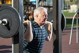
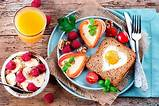

Publicado el 2 de junio de 2025 por Antonio Banderas
El entrenamiento de fuerza consiste en ejercitarse contra una resistencia para aumentar tanto la fortaleza como la capacidad de aguante de los músculos. Se puede practicar usando el propio peso, pesas o máquinas especializadas. Para los adultos mayores, este entrenamiento...
Leer más

Publicado el 30 de enero de 2025 por Flor Peña
Un desayuno saludable óptimo se compone de alimentos muy nutritivos que cubran tus necesidades de proteínas, carbohidratos y grasas, y que además te aporten las vitaminas y minerales esenciales para el día. Por eso, hoy compartimos contigo 40 recetas de desayunos sanos, fáciles y deliciosos. ¡Sigue leyendo para conocerlas!
Leer más
Publicado el 28 de marzo de 2025 por Alejandro Gudiño
En la búsqueda de un estilo de vida saludable, encontrar la motivación para ir al gimnasio puede ser un desafío constante. ¡Pero no te preocupes! Aquí te comparto 10 consejos que te ayudarán a encender esa chispa interior y mantenerte enfocado en tus objetivos de fitness. Desde la creación de metas realistas hasta la importancia de la variedad en tu rutina de ejercicios, este texto te guiará en el camino....
Leer más
Buena publicacion, muy interesante.
Hace 2 díasGracias por la información.
Ayer